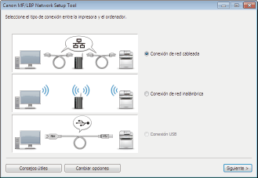
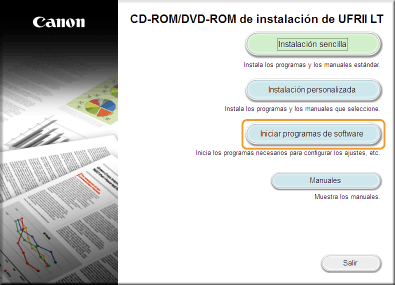
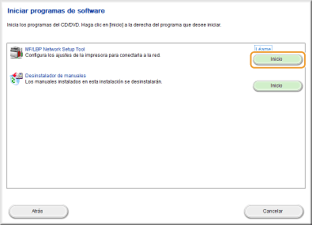
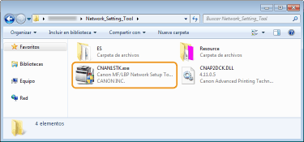

0KUC-00S
La MF/LBP Network Setup Tool es una utilidad que le permitirá configurar las opciones de red iniciales siguiendo las instrucciones que se le indiquen en la pantalla. Esta herramienta se abrirá automáticamente al instalar el controlador de impresora desde el CD-ROM/DVD-ROM que contiene el User Software. En caso de que usted quisiera abrirla de forma manual, deberá hacerlo desde el CD-ROM/DVD-ROM que contiene el User Software o desde un archivo descargado desde el sitio web de Canon.

|
|
|
El entorno de sistema necesario para utilizar la MF/LBP Network Setup Tool es el mismo entorno de sistema necesario para el controlador de impresora. Requisitos del sistema
Consulte Configuración de las opciones de conexión de red cableada o Configuración de las opciones de conexión de red inalámbrica para obtener más información sobre cómo configurar las opciones de red iniciales utilizando la MF/LBP Network Setup Tool.
|
1
Inicie sesión en el ordenador con una cuenta de administrador.
2
Introduzca el CD-ROM/DVD-ROM que contiene el User Software en la unidad del ordenador.
3
Haga clic en [Iniciar programas de software].


Si no aparece la pantalla anterior Visualización de la pantalla [Programa de instalación del CD-ROM/DVD-ROM]
Si aparece [Reproducción automática], haga clic en [Ejecutar MInst.exe].
4
Haga clic en [Inicio] de [MF/LBP Network Setup Tool].

La MF/LBP Network Setup Tool viene incluida con los archivos que hay que descargarse para instalar un controlador de impresora. Ábrala descargando el archivo del controlador de impresora, el cual contiene el controlador de impresora y los archivos correspondientes, desde el sitio web de Canon (http://www.canon.com/).
1
Descomprima el archivo que se ha descargado.
2
Haga doble clic en "CNAN1STK.exe" en la carpeta [Network_Setting_Tool].
